Durante a gravidez existem manifestações cutâneas fisiológicas do período gestacional, enquanto outras são consideradas patológicas e recebem o termo dermatoses específicas da gravidez. Podem ocorrer durante a gestação ou no período imediato pós-parto, e incluem o prurigo gestacional, as pápulas e placas urticariformes pruriginosas da gravidez, a colestase intra-hepática e o penfigoide gestacional. Representam um grupo heterogêneo de doenças que serão aqui abordadas.
PRURIGO GESTACIONAL
Doença benigna específica da gestação, também chamada de eczema atópico da gravidez ou prurigo gestacional de Besnier, foi descrita inicialmente por Besnier et al. em 1904.
Etiologia
Dermatose de etiologia ainda desconhecida, acredita-se que seja um tipo de overlap do prurido de origem atópica, mas pode se desenvolver em pacientes sem relato de atopia.
Epidemiologia
O prurigo da gravidez (PP) afeta aproximadamente 1 em 300 a 1 em 450 gestações (Kroumpouzos e Cohen, 2001, Roger et al., 1994, Roth et al., 2016). Uma incidência elevada, muitas vezes ultrapassando a da erupção polimórfica da gravidez (PEP). Ao contrário da PUPPP, colestase intra-hepática da gestação e penfigoide gestacional, que predominam no final da gravidez, o prurigo gestacional ocorre mais precocemente, entre a 20º e 34º semana. Raramente ocorre em primíparas.
Quadro clínico
Caracteriza-se por pápulas e nódulos eritematosos intensamente pruriginosos principalmente em superfícies extensoras dos membros, abdomen, podendo acometer também o tronco. As lesões evoluem para crostículas e escoriações, caracterizando um quadro eczematoso.
A histopatologia é inespecífica e evidencia infiltrado inflamatório predominantemente linfocitário na derme superior, sem eosinófilos, com presença de acantose e paraceratose, sugerindo um processo eczematoso subagudo ou crônico. Imunofluorescência negativa.
O diagnóstico diferencial deve incluir além das doenças específicas da gravidez, as dermatoses pruriginosas não relacionadas à gestação.
Tratamento
O tratamento é sintomático, visando alívio do prurido. Usa-se anti-histamínicos orais e corticoides tópicos. A doença tem caráter benigno, não acarreta repercussão para mão e/ou feto, e tende a se resolver logo após o parto, exceto em raros casos que pode persistir por semanas ou meses. Não há tendência a recorrer em gestações futuras.
PÁPULAS E PLACAS URTICARIFORMES PRURIGINOSAS DA GRAVIDEZ
Pápulas e placas urticariformes pruriginosas da gravidez (PUPPP), também conhecidas como erupção polimórfica da gravidez (PEP), é a dermatose gestacional mais comum. É uma doença cutânea inflamatória benigna, pruriginosa, caracterizada por quadro clínico polimorfo, exames laboratoriais normais e imunofluorescência direta negativa. A PUPPP geralmente acomete primigestas no terceiro trimestre de gestação, com menor frequência no pós-parto imediato, e não apresenta tendência de recorrência nas gestações subsequentes. Lawley et al. descreveram esta entidade pela primeira vez em 1979, com base nos achados clínicos iniciais de pápulas e placas urticariformes, desenvolvendo-se dentro de estrias distensas. Para abranger as características polimorfas posteriores, também descritas nesta condição, o termo “erupção polimórfica da gravidez” foi sugerido e agora é aceito de forma semelhante.
Epidemiologia
Condição relativamente freqüente, surgindo em 1 para cada 160 gestantes, 73% ocorrendo na primeira gravidez.
Etiologia
Etiologia desconhecida, mas há relatos de risco aumentado para a doença em gestação com múltiplos fetos, relacionado principalmente com o ganho de peso e distensão da pele abdominal.
Há casos relatados relacionados à hipertensão gestacional e uma série de casos observou maior risco quando o feto era masculino. Estudos recentes demonstram relação com tabagismo.
Quadro clínico
A dermatose caracteriza-se por pápulas e/ou placas urticariformes intensamente pruriginosas inicialmente sobre as estrias abdominais, normalmente poupando a região periumbilical, e que posteriormente progride para nádegas e partes proximais das coxas, podendo generalizar. Tipicamente ocorre no terceiro trimestre da gravidez.
O diagnóstico é clínico e o exame histopatológico inespecífico. Quando indicado, será útil para afastar outras patologias.
A doença tem caráter benigno, excelente prognóstico e não ocorrem conseqüências ao feto. Autolimitada, melhorando em 4 a 6 semanas independentemente do parto. Não é freqüente recidiva em gestações posteriores.
Tratamento
O tratamento visa aliviar o prurido, que se torna desesperador em algumas pacientes. O uso de corticoides tópicos é frequentemente utilizado em associação a anti-histamínicos orais. Corticoides orais podem ser eventualmente necessários. Hidratação e emolientes devem ser sempre orientados.
COLESTASE INTRA-HEPÁTICA
A colestase intra-hepática da gestação é uma doença hepática que ocorre tipicamente no terceiro trimestre gestacional, caracterizada por prurido e icterícia.
Epidemiologia
Doença relativamente rara, acometendo cerca 1 a 3% de todas as gestações, tipicamente no terceiro trimestre.
Etiopatogenia
Ainda com etiologia desconhecida e provável caráter multifatorial, talvez relacionados com aumento dos níveis hormonais de estrógeno e progesterona inerentes a gestação, que induziriam aumento na excreção de sais biliares.
Manifestações clínicas
O quadro é inespecífico de prurido e icterícia em gestante no terceiro trimestre gestacional. O prurido tende a iniciar-se em abdômen, palmas e plantas, com posterior disseminação. Exames laboratoriais sempre devem ser solicitados em caso de suspeita de colestase intra-hepática e evidenciam alteração de enzimas hepáticas.
Tratamento
O tratamento é sintomático, com relatos de bons resultados com uso de ácido ursodesoxicólico no controle do prurido. Deve ser ressaltado que o tratamento materno pode não diminuir os riscos fetais.
O prognóstico é benigno para mãe com tendência a resolução espontânea após o parto, porém o prognóstico fetal não sendo tão favorável, com risco aumentado de prematuridade e óbito fetal, devendo ser considerada uma gestação de alto risco. A recorrência é alta em gestações subseqüentes, chegando a 70% dos casos.
PENFIGOIDE GESTACIONAL
É uma erupção bolhosa, polimórfica, intensamente pruriginosa que ocorre na gravidez e período pós-parto. O termo herpes gestacional deve ser evitado por causa da inapropriada relação com o herpesvírus, fora da dermatologia.
Epidemiologia e etiopatogenia
A incidência provável é de 1 para 10-50.000 gestações. As mães expressam normalmente HLA-B8, DR3 e DR4. Uma parcela de seus parceiros expressam o HLA-DR2. A resposta imune primária parece ter lugar dentro da placenta. Foi proposto que o penfigoide gestacional (PG) seria iniciado por uma expressão aberrante de antígenos classe II do MHC (do haplotipo paterno). Isto levaria a uma resposta alogênica à ZMB placentária (âmnio), que reagiria cruzadamente com a pele. Isto também poderia explicar a ocorrência de PG associado a molas hidatiformes e coriocarcinomas. O antígeno é semelhante ao do penfigoide bolhoso (BP180, BPAG2 ou colágeno tipo XVII que é uma proteína hemidesmossomal). Os autoanticorpos são IgG, subclasse IgG1 e, menos frequentemente, IgG3.
Manifestações clínicas
Lesões papulovesiculares ou urticarianas intensamente pruriginosas no abdome, particularmente em torno do umbigo, evoluem rapidamente para uma eupção bolhosa semelhante ao penfigoide bolhoso. O envolvimento mucoso é raro. Tem início em qualquer momento entre a quarta semana de gestação e a quinta semana do pós-parto, sendo mais usual no segundo ou terceiro trimestre da gestação. O quadro desaparece 1 a 2 meses após o parto. O recém-nato tem envolvimento cutâneo em 3-10% dos casos. Aumenta o risco de prematuridade e baixo peso ao nascer. No período remissivo pode haver exacerbação com o uso de anticoncepcionais ou durante os períodos menstruais. Tem uma associação de 14% com outras doenças autoimunes, particularmente doença de Graves.
Diagnóstico
A imunofluorescência mostra depósito linear de C3, com ou sem IgG, na ZMB. Na histopatologia, a bolha é subepidérmica e contém numerosos eosinófilos. O nível de clivagem ocorre na lâmina lúcida. O diagnóstico diferencial principal é feito com as placas e pápulas urticarianas e pruríticas da gravidez (PUPPP).
Tratamento
Usa-se potentes corticoides tópicos associados aos anti-histamínicos para aliviar o prurido. Se necessário usam-se os corticoides sistêmicos em baixas doses até o parto. Dapsona não ajuda. O tratamento pós-parto é problemático por causa do aleitamento materno.
REFERÊNCIAS BIBLIOGRÁFICAS
1. Pruritic Urticarial Papules and Plaques of Pregnancy. Chourouk Chouk, Noureddine Litaiem. In: StatPearls [Internet]. Treasure Island (FL): StatPearls Publishing; 2025 Jan. 2023 Jul 31.
2. Instagram Content Addressing Pruritic Urticarial Papules and Plaques of Pregnancy: Observational Study.
Payton A, Woo BKP. JMIR Dermatol. 2021 Feb 11;4(1):e26200.
3. Pruritus in Pregnancy and Its Management. Bechtel MA. Dermatol Clin. 2018 Jul;36(3):259-265.
4. A Case of Pruritic Urticarial Papules and Plaques of Pregnancy: Pathophysiology and Serum Cytokine Profile. Ishikawa-Nishimura M, Kondo M, Matsushima Y, Habe K, Yamanaka K. Case Rep Dermatol. 2021 Jan 25;13(1):18-22.
5. Common Skin Conditions During Pregnancy. Erlandson M, Wertz MC, Rosenfeld E. Am Fam Physician. 2023 Feb;107(2):152-158.
Atlas de imagens 20


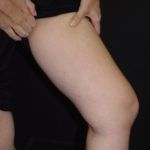


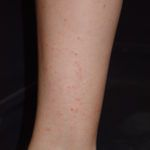


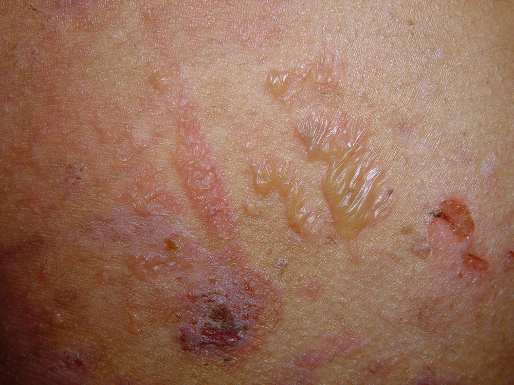

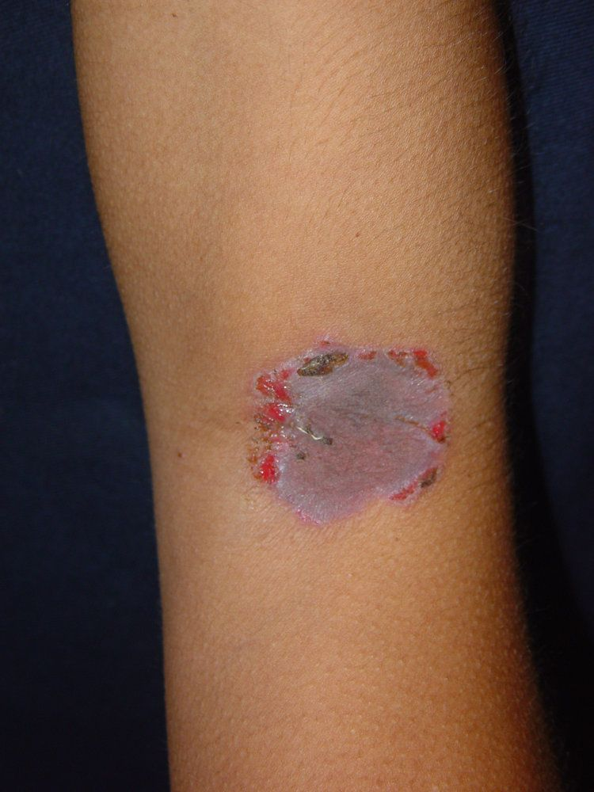

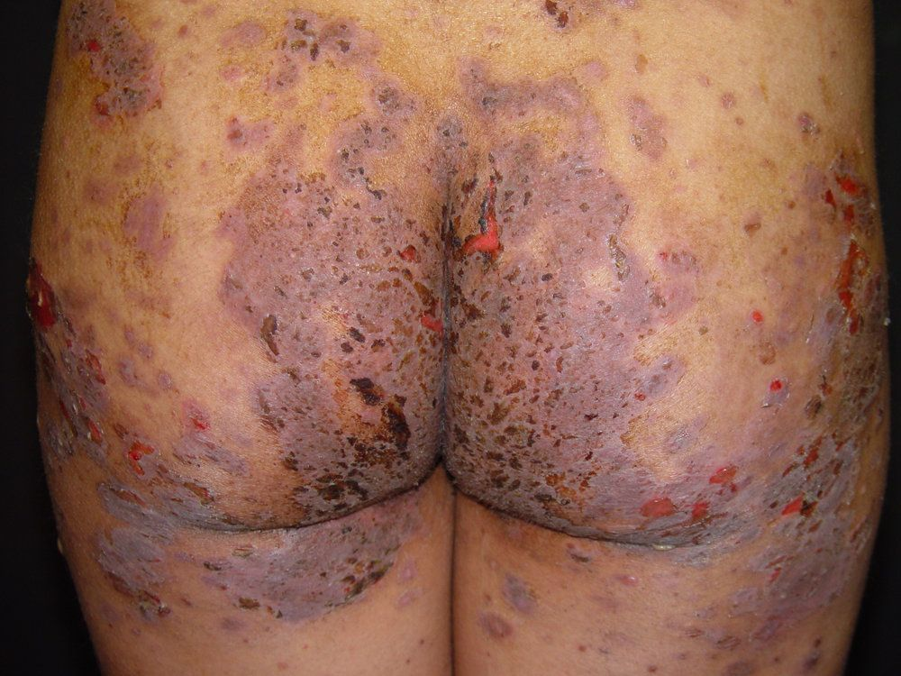

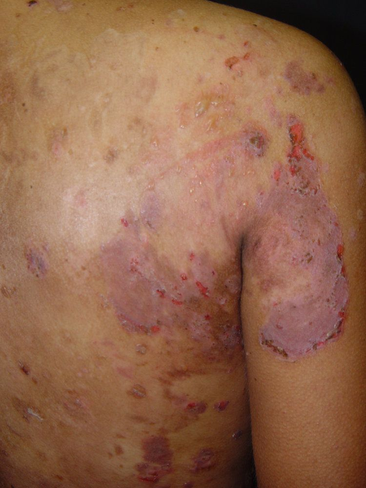

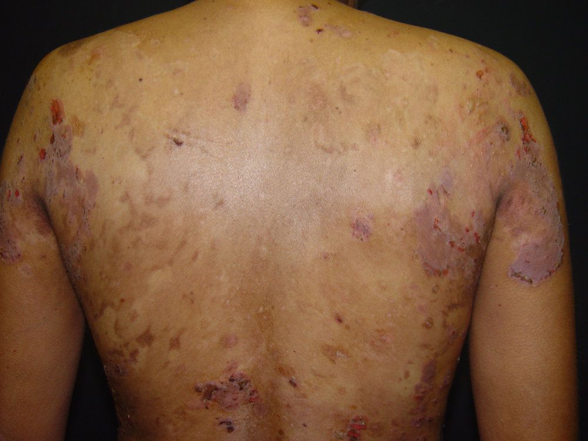

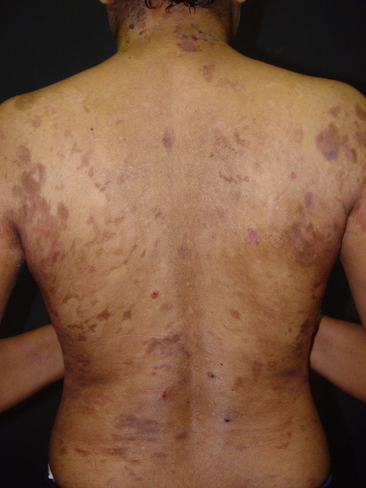

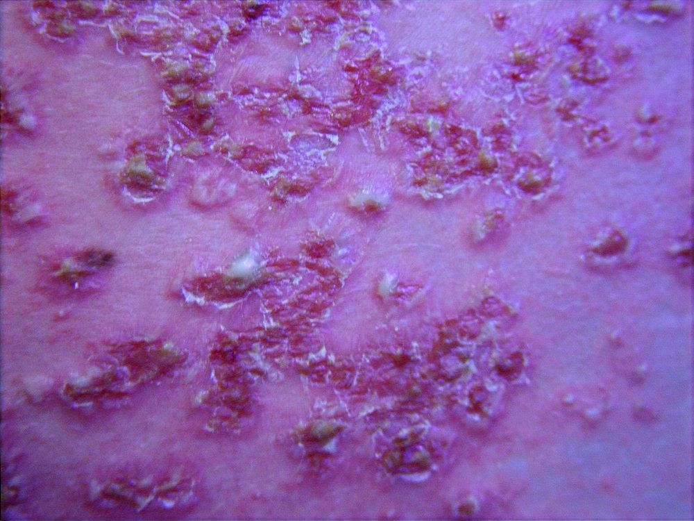

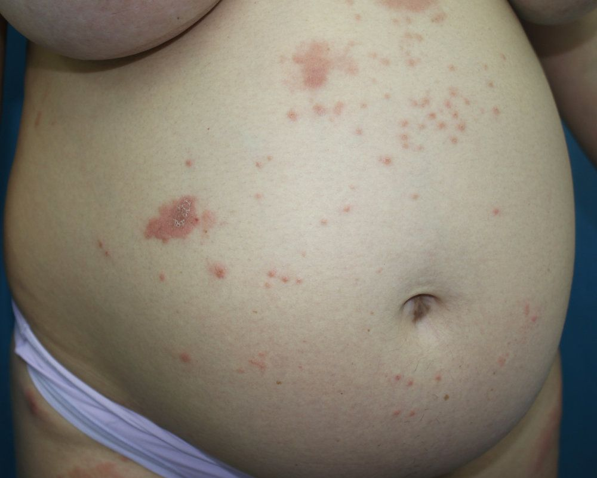

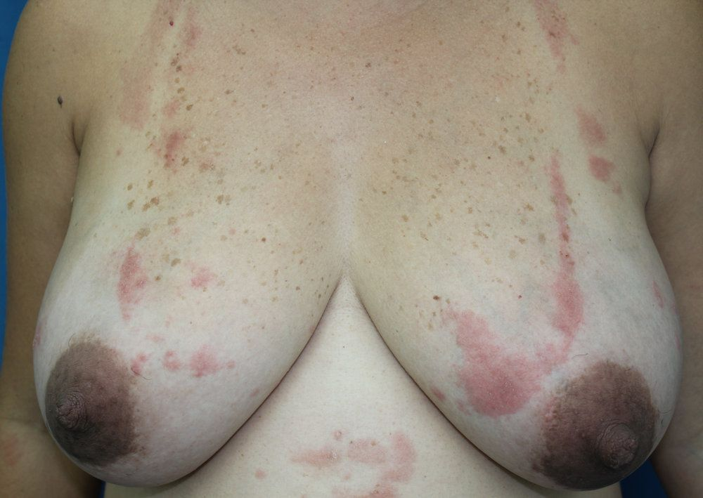

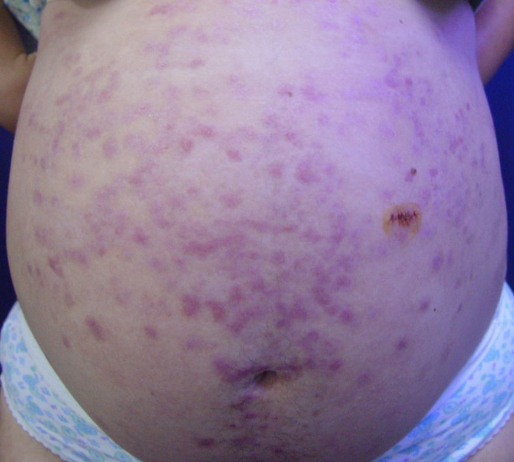

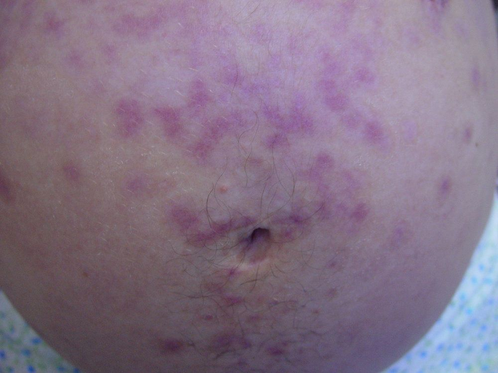

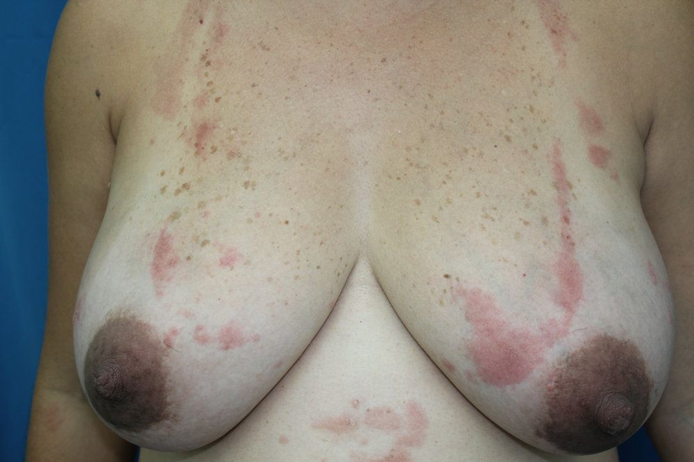

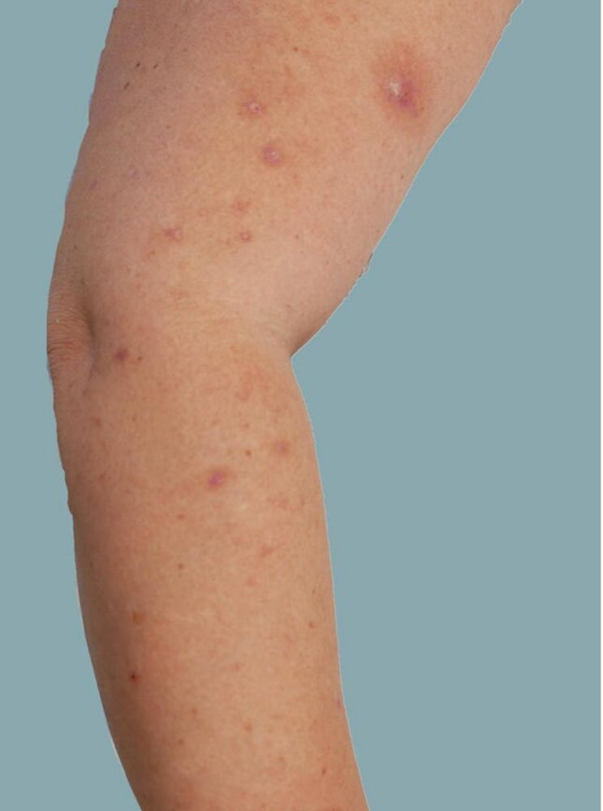

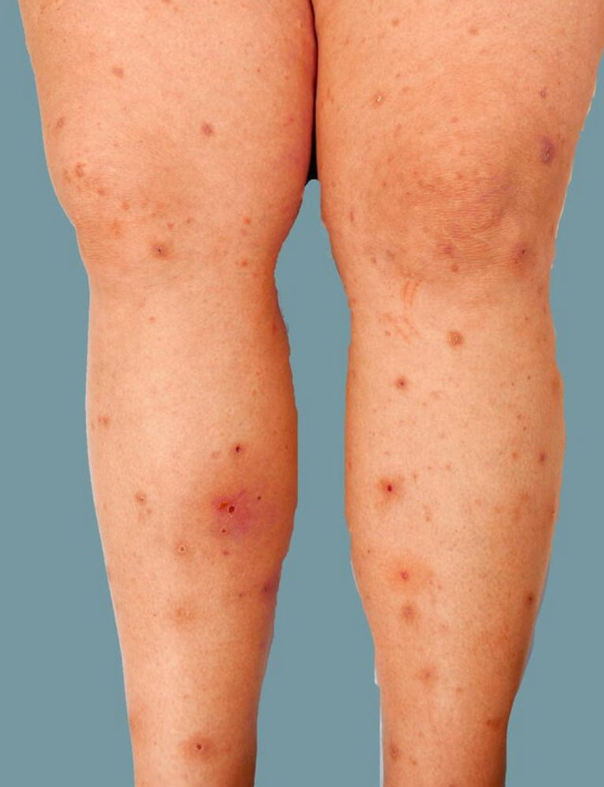

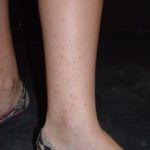
Na Skin Prime
Como podemos ajudar
Entre os recursos citados para Dermatoses da Gravidez, estes estão disponíveis na clínica:
Diagnóstico